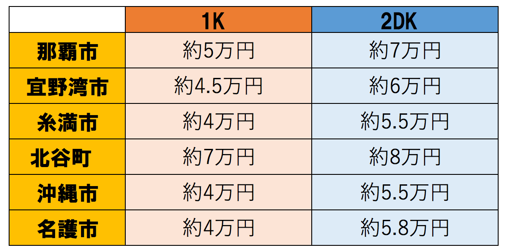
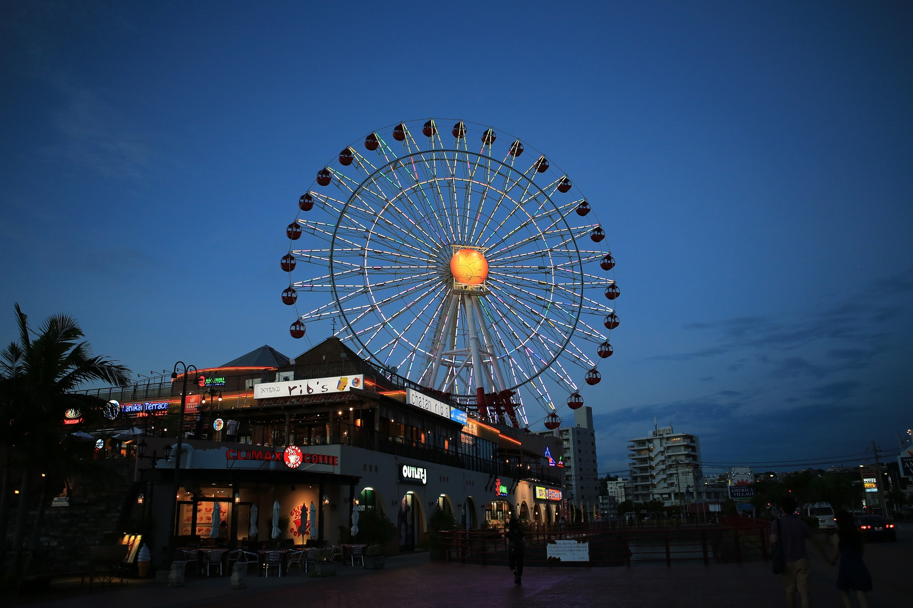
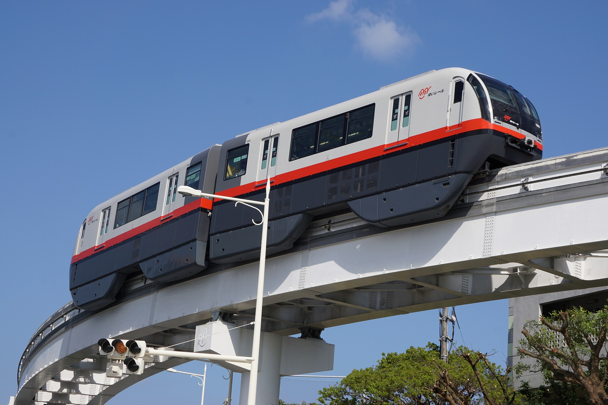
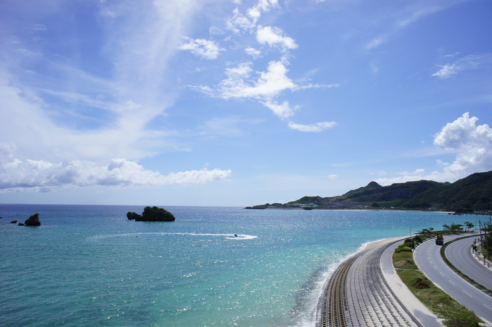

沖縄の物件探し
沖縄の物件探し
×
happyhousing@syota.co.jp
沖縄の一人暮らし用の賃貸物件の相場はどれくらい？
沖縄は車社会。なので、「1人分の駐車場」がつくことを前提とすると、相場はこんな感じ。

(引用元 : 比嘉不動産)
…北谷がダントツで高い理由
北谷はいわゆる西海岸エリアにある。西海岸エリアは沖縄移住する人にとても人気なエリア。 西海岸の中でもショッピング施設「美浜アメリカンビレッジ」やサンセットビーチなど、 生活が楽しくなる施設が充実している北谷が特に沖縄移住者にとって人気だという理由から、 賃貸物件の相場がダントツで高いと思われる。
車を持ってない方へオススメなのは那覇!!
沖縄の県庁所在地で、政治やビジネス始めすべての中心になっている地域は「那覇市」です。 バスにモノレールといった公共交通機関が充実し、デパートやスーパーなどの商業施設ほか飲食店も多いので、生活面での利便性が県内で最も高いエリアと言えます。 いわゆる「本土と変わらない生活」が送れ、移住者が住みやすい街ナンバーワンが那覇市でしょう。 そのため、沖縄歴が短く初めて暮らす方にオススメします。那覇の中心地でありながら、街並みが整備され住み心地の良さを感じるのは、新都心エリアです。 住所上は市内北部を指し、天久・おもろまち・銘苅・上之屋あたりを新都心地区と呼んでいます。 以前は米軍に住宅用地として接収されていた土地でしたが1987年に全面返還され、その後開発されたためすべての建物が新しく、大型スーパーや学校、病院など生活に関わる施設が身近にあります。 沖縄県の人口約143万人の内、23％にあたる約33万人が住んでいる那覇市。 気になる家賃相場は「4.65万円」(1R、1K、1DKでの相場)と高めですが、その分便利ですし、仕事を探す方にとっては就職のチャンスも他市町村よりは多いはずです。 沖縄ビギナーはまずは那覇の賃貸物件に住み、暮らしながらより深く沖縄を知っていくスタイルはいかがでしょうか。
北谷以外でオススメなエリア
マイカーを持っているという方にオススメなのは「豊見城市（とみぐすくし）」です。 車移動ですと那覇まで30分かかりませんし、ここ数年で商業施設がどんどん増えるなど市全体がぐんぐん成長してきました。 西海岸向けに出ると、海が広がる美しい景色も望めます。 某経済誌発表による「全都市住みよさランキング」では、沖縄県の中で1位に輝いた人気の市です。 実際に物件を探す時には、豊見城市も候補に入れてみてください。 そして、もう1つの人気エリアと言えば、「宜野湾市（ぎのわんし）」。 ビーチや公園で自然に触れ、またスーパーやカフェなども多いので、おしゃれ感のあるベイエリア生活が楽しめそうです。 豊見城市と同じく車で那覇まで30分弱という距離にあり、島の中央部に位置しています。
